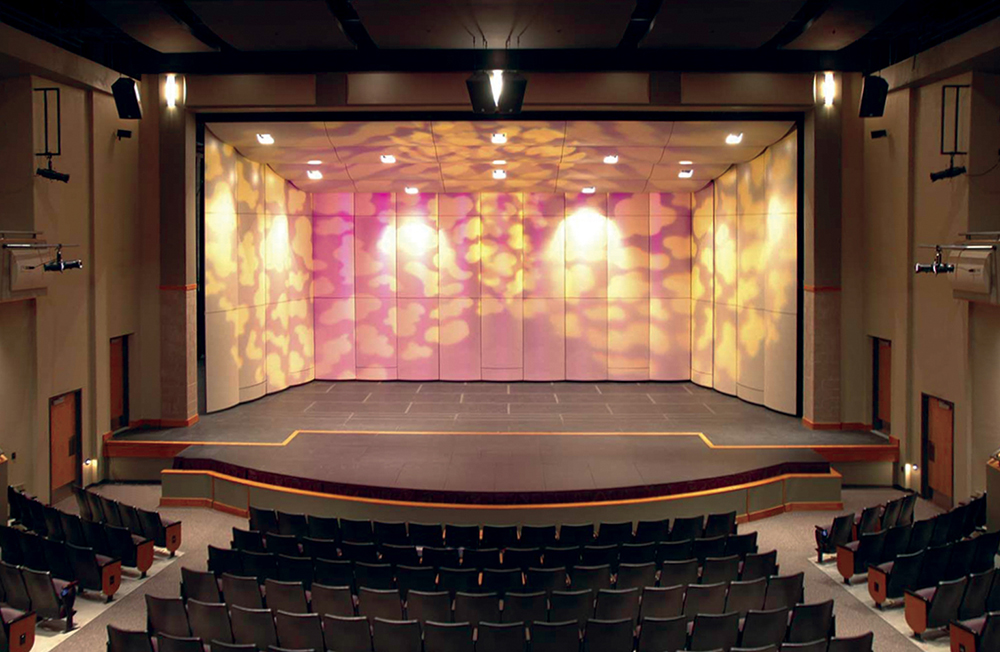
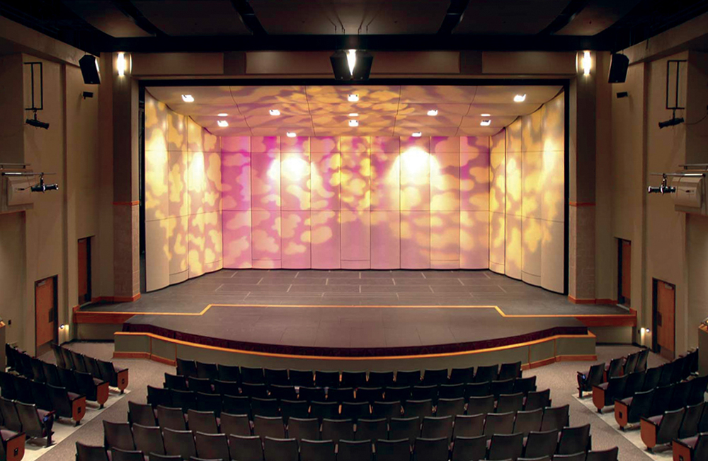

Bryan Ramirez
I am a dedicated employee who works hard to keep employers and clients satisfied while working outside the box to get my job done more efficiently. I am always looking to make my self useful and will gladly be a part of teams that will make things better for the group as a whole. In all honesty I don't really know what to put in this bio I don't have much work experience that I feel like I can put into this website. I don't plan to use this as an actual website, after the quarter ends I won't be able to code this sit any way because I will lose access to the AWS site. If anyone is actually reading this I'm sorry for not following the prompt but I have no idea what to put into this site. I don't feel confortable talking about myself in this fashion mainly because I don't know what to write about since there is not much to me. Not that the things I wrote in first paragraph and the beginning of this one is wrong, that is just all I can think to include in this bio. Maybe when I make a true website to attract employers I will have more to write about because I will hopefully have more work experience.
I am a current undergrad student at the University of California, Riverside pursuing a degree in History with the goal of becoming a history teacher. In high school I took part in several honors and AP classes scoring high in the following AP tests with scores ranging from 3-4. I thrive in literary comprehension and historical analysis with my core strength being in writing argumentative essays. I have excellent work management skills ensuring that I get all my work done in a timely matter while ensuring that it meets the standard of the professor who assigned it.
I'll try to reach the minimum word count so I can pass this lab. I enjoy how much customization I can include in these labs, its more than I could include in my previous computer science lab which had a strict prompt to follow. With these I can make the site feel like they are truly my own because of the personality I can inject into them. The last lab where I made a website selling a needlessly complicated sounding trombone was quite amusing. I find trombones to be an amusing instrument because of all the brass horns instruments they are not only long but deceptively complex to master. I played trombone in middle school I never quite got the hang of it because the way you slide the slider of the trombone can change the sound of the note. I wish I had more patience to play an instrument but I could never wrap my head around music theory which I was taught is vital to understanding instruments. I never strove to be a song writer I just find strumming a guitar strangely therapeutic and I'd like to play a song for friends and family that sounds confident. Looks like I reached my word count, again sorry for not following what I was supposed to with this bio but I hope this was interesting to anyone reading it, assuming anyone was.
Experience
Sales Associate
• Check out customers
• Reprocess returned merchandise
• Restock Merchandise
Late Night Stock Associate
• Stocked merchandise brought in by trucks before opening hours
• Disposed of palletes and debris from the store
GREAT Academy Participant
• Participate in events and pagents
• Organize and perform in local parades
• Practice classic style guitar in the school band
Education
UC Riverside
Portfolio




